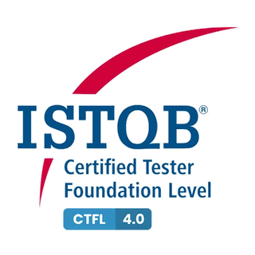

Certification Overview
This page highlights certifications and formal learning completed across artificial intelligence, analytics, software testing, monitoring and software development. These certifications support my broader experience in data analysis, reporting automation, dashboard development, quality assurance and technical problem solving.
Certifications
Generative AI and its Business Applications
TAFE IAT
Completed formal learning in generative AI and its business applications, developing practical skills in prompt engineering, responsible AI use, workflow optimisation and applying AI solutions to support productivity and business innovation.
Introduction to Artificial Intelligence
TAFE IAT
Completed formal learning introducing artificial intelligence concepts, practical applications and the role of AI in modern digital and data-driven environments.
Advanced Analytics
UNSW
Completed formal learning in advanced analytics, supporting skills in data analysis, evidence-based decision making, analytical problem solving and interpretation of complex information.

Certified Tester Foundation Level (CTFL) 4.0
ISTQB
Achieved a foundation-level software testing certification covering testing principles, test processes, quality practices and structured approaches to identifying defects and improving software reliability.
Splunk 7.x, 8.1 Fundamentals, Dashboards and Infrastructure
Splunk Inc.
Completed Splunk training covering fundamentals, dashboard creation and infrastructure monitoring concepts, supporting experience in log analysis, operational visibility and system performance reporting.
Java Development
FDM Group
Completed Java development training covering core programming concepts, object-oriented development and practical software engineering foundations.